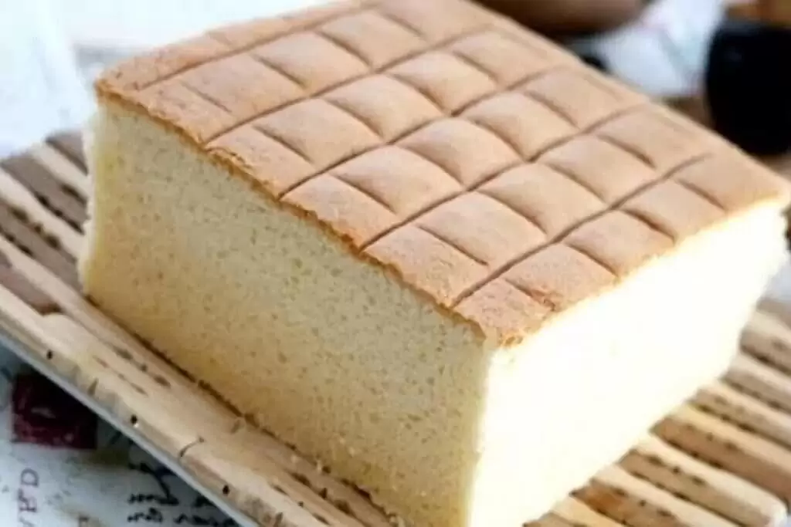

Receita de Pão de Ló
Pão de Ló

Pão de ló é um tipo de bolo leve e fofo, conhecido por sua textura macia
Qual é a origem do nome pão-de-ló?
O nome "pão de ló" tem origem incerta, mas é frequentemente associado à cidade
de Gênova, na Itália, onde se acredita que esse tipo de bolo tenha sido criado. No entanto,
o pão de ló é popular em muitos lugares ao redor do mundo e é apreciado por sua simplicidade
e sabor suave.
Ingredientes
- 4 ovos
- 1 xícara de açucar
- 1 xícara de farinha de trigo
- 1 colher de chá de essência de baunilha (opcional)
Instruções
-
Pré-aqueça o forno a 180°C e unte uma forma de bolo com manteiga e polvilhe com
farinha para evitar que o pão de ló grude.
-
Separe as claras das gemas dos ovos. Coloque as claras em uma tigela grande e as
gemas em outra tigela.
-
Bata as claras em neve usando uma batedeira elétrica ou manual. Quando as claras
começarem a espumar, adicione metade do açúcar e continue batendo até obter picos
firmes. Reserve as claras em neve.
-
Em outra tigela, bata as gemas com o restante do açúcar e a essência de baunilha
(se estiver usando) até obter uma mistura clara e fofa.
-
Com cuidado, adicione a farinha peneirada à mistura de gemas e misture delicadamente
com uma espátula até que a farinha esteja bem incorporada.
-
Adicione cerca de um terço das claras em neve às gemas e misture suavemente para
tornar a mistura mais leve.
-
Adicione o restante das claras em neve à massa e misture cuidadosamente, fazendo
movimentos de baixo para cima para não perder a leveza das claras.
-
Despeje a massa na forma preparada e nivele a superfície.
-
Asse no forno pré-aquecido por cerca de 25-30 minutos, ou até que o bolo esteja dourado
e um palito inserido no centro saia limpo.
-
Retire o pão de ló do forno e deixe esfriar na forma por alguns minutos antes de
desenformar. Depois, deixe esfriar completamente em uma grade.
Recomendação
Se desejar, você pode cortar o pão de ló ao meio e recheá-lo com seus ingredientes favoritos,
como chantilly, geleias, frutas ou ganache de chocolate. Essa receita de pão de ló básica é uma
ótima base para criar sobremesas deliciosas.